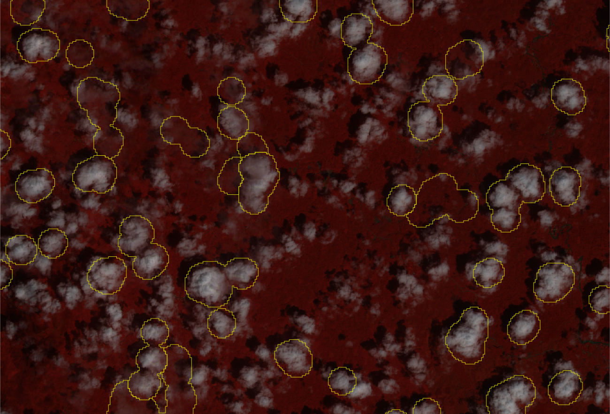
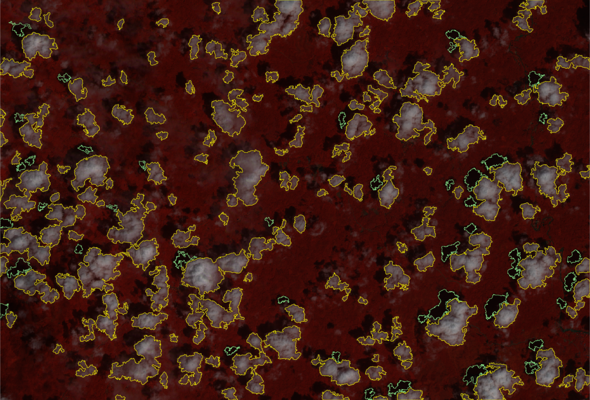
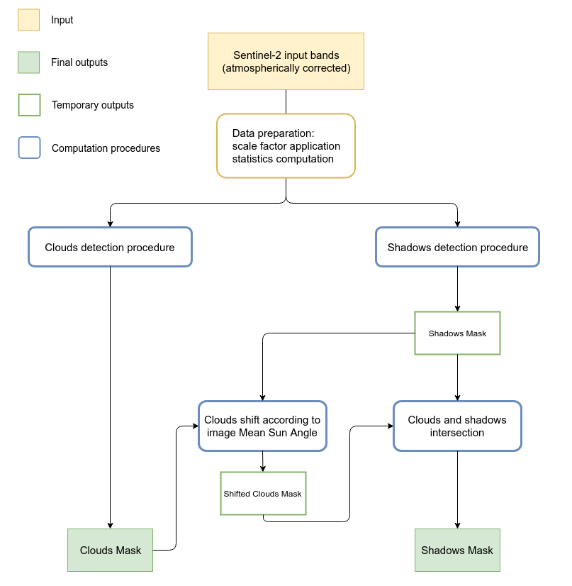
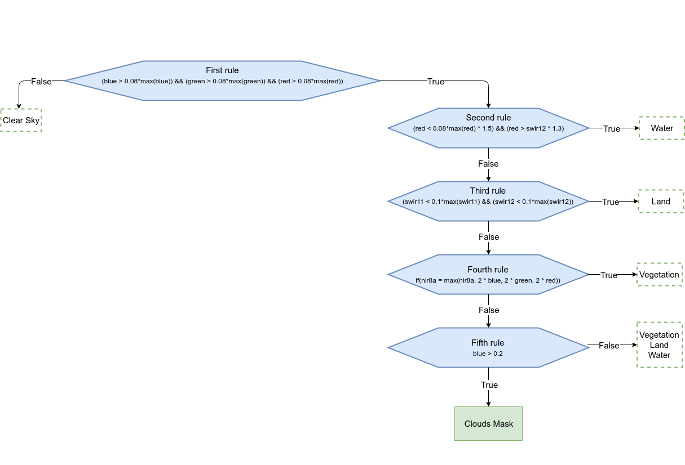
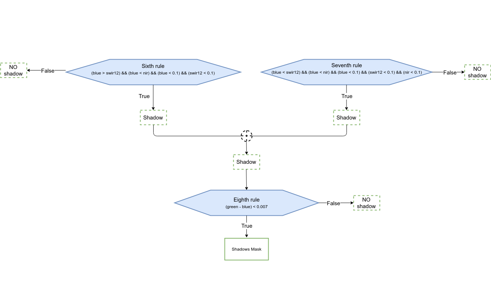

The following figures show the difference between the standard cloud mask as provided in Sentinel-2 SAFE products and the cloud detection results obtained with i.sentinel.mask (shadow detection not activated in this example; see below for an example with cloud and shadow masks):
|  Fig: Official cloud mask (yellow borders) as provided in Sentinel-2 SAFE products (example: Indonesia) |
 Fig: Cloud (yellow borders) and shadow (green borders) detection with i.sentinel.mask (example: Indonesia) |
The implemented procedure consists essentially of an algorithm based on values thresholds, comparisons and calculations between bands which leads to two different rough maps of clouds and shadows. These require further improvements and elaborations (e.g. transformation from raster to vector, cleaning geometries, removing small areas, checking topology, etc.) carried out in the different steps of the procedure.
|  Fig: Module General WorkFlow |
 Fig: Cloud detection procedure |
 Fig: Shadow detection procedure |
The algorithm has been developed starting from rules found in literature (Parmes et. al 2017) and conveniently refined.
Regarding the detection of shadows, the algorithm has been developed to identify only the shadows of clouds on the ground. Obviously, some misclassifications can occur. Often shadows and water have in fact, similar reflectance values which can lead to erroneous classification of water bodies as shadows. Therefore, in order to increase the accuracy of the final shadow mask, a control check is implemented. Clouds and shadows are spatially intersected in order to remove misclassified areas. This means that all those shadow geometries which do not intersect a cloud geometry are removed.
All necessary input bands (blue, green, red, nir, nir8a, swir11, swir12) must be imported in GRASS and specified one by one or using an input text file. The text file has to be written following the syntax below: variable=your_map
blue=your_blue_map green=your_green_map red=your_red_map nir=your_nir_map nir8a=your_nir8a_map swir11=your_swir11_map swir12=your_swir12_map
The final outputs are two different vector maps, one for clouds and one for shadows.
The metadata file (MTD_TL.xml or S2A_OPER_MTD_L1C_TL_MPS__*.xml) is required only if both masks (cloud and shadow) are computed. The module retrieves from this file the sun azimuth and zenith necessary for the shadow mask cleaning phase (see the scheme above)
If flag -s is given all selected bands are rescaled using the specified scale factor [scale_fac=integer]. By default the scale factor is set to 10000, the QUANTIFICATION_VALUE from the metadata of Sentinel-2 images.
The module takes the current region settings into accout. To ignore the current region and set it from the whole image, the flag -r has to be given.
The module allows to compute only the cloud mask or both cloud and shadow masks. If flag -c is given, only the cloud procedure will be performed. The computation of cloud mask is mandatory for shadow mask creation. In fact cloud map is used during the cleaning phase of the shadow mask in order to remove misclassifications.
If the input_file is given, the mtd_file or metadata can also be specified in the this file.
i.sentinel.mask -r input_file=path/input_cloud_mask.txt cloud_mask=cloud \ shadow_mask=shadow cloud_threshold=25000 shadow_threshold=5000 mtd_file=path/MTD_TL.xml
The input text file:
blue=T17SPV_20180315T160021_B02_cor green=T17SPV_20180315T160021_B03_cor red=T17SPV_20180315T160021_B04_cor swir11=T17SPV_20180315T160021_B11_cor nir=T17SPV_20180315T160021_B08_cor swir12=T17SPV_20180315T160021_B12_cor nir8a=T17SPV_20180315T160021_B8A_cor
Use -r to set the computational region to the maximum image extend.
# EPSG 32749 (UTM 49S) # Scene: S2A_MSIL2A_20200104T024111_N0213_R089_T49MGU_2020010 i.sentinel.download settings=credentials output=data uuid=f4d51134-c502-488b-8384-9eb0009c7545 # Mangkawuk area g.region n=9870790 s=9855540 w=763950 e=786410 res=10 -p # limit import to all bands with 10m and 20m resolution (excluding AOT, WVP, ... bands): i.sentinel.import input=data -j pattern='_B((0[2348]_1)|(0[567]|8A|11|12)_2)0m' # prepare input file list g.list raster pattern="T49*" g.list raster pattern="T49*" output=input_cloud_shadow_mask.csv # edit input_cloud_shadow_mask.csv, content: blue=T49MGU_20200104T024111_B02_10m green=T49MGU_20200104T024111_B03_10m red=T49MGU_20200104T024111_B04_10m nir=T49MGU_20200104T024111_B08_10m swir11=T49MGU_20200104T024111_B11_20m swir12=T49MGU_20200104T024111_B12_20m nir8a=T49MGU_20200104T024111_B8A_20m # the default metadata json will be used i.sentinel.mask -s input=input_cloud_shadow_mask.csv cloud_mask=cloud_mask \ cloud_raster=cloud_raster shadow_mask=shadow_mask \ cloud_threshold=50000 shadow_threshold=40000
i.sentinel.download, i.sentinel.import, i.sentinel.preproc, r.import, r.external
{kind=link}
{kind=link}
{kind=link}
{kind=link}
{kind=link}
{kind=link}
{kind=link}